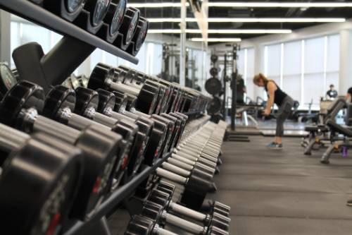
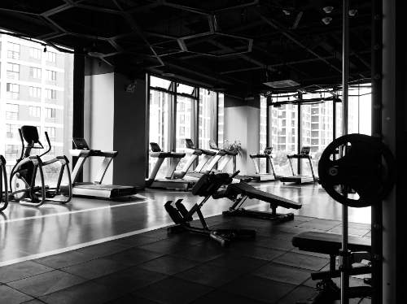
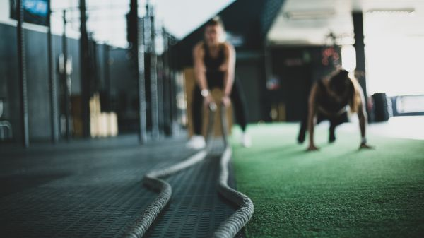

SMEK Fitness Group is an athletic facility designed for people who
want more than the sweaty, cramped, and outdated gym experience.
The facility includes a traditional gym with free weights, cables,
treadmills and other machines, and a small turf area. Additionally,
members have access to a 6-lane pool, a spinning room, a boxing area,
and a yoga studio. Each of these additional spaces plays host to a
class lead by one of our specialized staff members in their area of
expertise.

Some of our free weights

Treadmills and more free weights

Our turf area
History of SMEK
SMEK Fitness was founded by four hard-working students at Tufts
University in early 2023. They were tired of the cramped on-campus
weight room and wanted to create a space for themselves and others
to enjoy. They decided on a name that represented both themselves,
using the first letter from each of their names, and four principles
which they hoped to cultivate in their new space.
Four Principles
Strength - The basic principle of weightlifting. People go to the gym to get strong in order to help them in the daily lives, boost their self-confidence, and improve their relationship with their bodies.
Movement - The principle of movement helps people stay healthy by maintaining their ranges of motion and improving cardiovascular health. Movement has different meanings for different people, all of whom are welcome at SMEK.
Exercise - Perhaps the most general principle, exercise can truly be whatever it means to each individual member. SMEK wishes to cater towards people with all levels of physical activity and experiences, as well as people with a wide range of exercise-related goals.
Kinesiology - The most specific principle, kinesiology is the study of physical activity and human movement. By including this principle, we at SMEK hope to show that while SMEK is for everyone, we are still very serious about exercise and those with very specific and high-level athletic goals are very much welcome here.